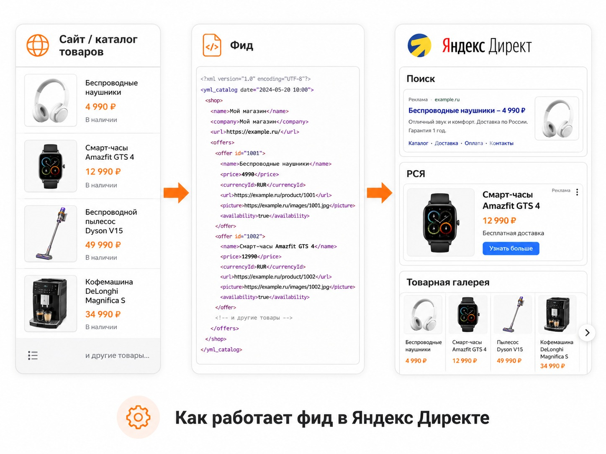
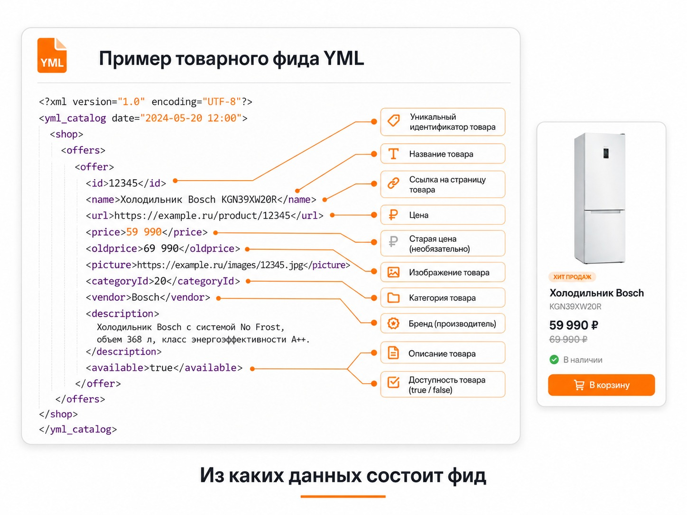

Блог о платном трафике
Фид в Яндекс Директе: что это и как его создать
Фид в Яндекс Директе - это файл со структурированной информацией о товарах или услугах. В нем могут храниться названия, цены, ссылки на страницы сайта, изображения, категории, описания, характеристики и другие данные.
Яндекс Директ получает эту информацию и на ее основе автоматически создает объявления. Сейчас фиды используются в товарных кампаниях, а также для товарных объявлений и страниц каталога в Единой перфоманс-кампании. Такие объявления могут показываться на поиске, в РСЯ и товарной галерее.
Проще говоря, фид можно представить как каталог, подготовленный в понятном для рекламной системы формате.

Как работает фид
Представим интернет-магазин с 5000 товарами. Создавать отдельное объявление вручную для каждой позиции практически бессмысленно.
Вместо этого сайт формирует файл примерно с такими данными:
- название товара;
- уникальный ID;
- цена;
- старая цена, если она есть;
- ссылка на страницу товара;
- ссылка на изображение;
- производитель;
- модель;
- категория;
- описание;
- наличие;
- дополнительные характеристики.
Набор полей зависит от типа фида и тематики. Например, для автомобиля могут передаваться марка, модель, год выпуска и пробег, а для отеля - название, местоположение, цена, рейтинг и перечень услуг.
Директ читает этот файл и понимает, какие предложения есть у рекламодателя. После этого система может автоматически сформировать подходящий рекламный формат для конкретного товара.
Сначала сайт или база товаров формирует фид. Затем Директ читает его и автоматически собирает объявления из переданных данных.
Для большого ассортимента это намного удобнее ручного создания сотен или тысяч объявлений.
Для чего нужен фид в Яндекс Директе
Главная задача фида - передать рекламной системе актуальную и структурированную информацию об ассортименте.
Например, интернет-магазин продает холодильники. В фиде есть:
Название: Холодильник Bosch KGN39
Цена: 64 990 ₽
Категория: Холодильники
Производитель: Bosch
Ссылка: страница конкретной модели
Изображение: фотография холодильника
Яндекс получает эти данные и может использовать их при формировании товарного объявления. Если каталог большой, преимущества становятся особенно заметными: не нужно вручную создавать рекламу для каждой новой позиции и постоянно исправлять цены.
Если фид размещен на сайте и подключен к Директу по ссылке, робот Яндекса периодически забирает обновленный файл. По текущей документации основной импорт выполняется раз в сутки. Если же файл просто загрузить с компьютера, автоматического обновления не будет.
Для интернет-магазина поэтому обычно имеет смысл делать автоматически обновляемый фид, связанный с каталогом сайта. О запуске рекламы подробнее - в инструкции по настройке Яндекс Директа.
Фид нужен не только интернет-магазинам
Название «товарный фид» иногда создает впечатление, что инструмент предназначен исключительно для обычных интернет-магазинов. Это не так.
В Директе предусмотрены форматы фидов для разных направлений:
- обычных товаров;
- услуг;
- автомобилей;
- недвижимости;
- отелей;
- авиабилетов;
- путешествий;
- образовательных услуг;
- медицинских услуг.
Например, для автомобилей используется XML-фид Авто.ру, для жилой недвижимости - XML-фид Яндекс Недвижимости. Есть отдельные форматы для образования и медицины.
Поэтому сам принцип можно использовать гораздо шире: есть много однотипных предложений - передаем их Директу структурированным списком.
Форматы и требования к фиду
Формат зависит от типа бизнеса и используемой структуры данных. Среди поддерживаемых вариантов есть YML, XML, CSV и формат Google Shopping.
Для классического интернет-магазина часто используется YML. В таком файле каждый товар описывается отдельным предложением. Точный набор обязательных полей зависит от типа описания и категории бизнеса, поэтому перед выгрузкой нужно выбрать формат и сверить его с требованиями Директа.
| Поле | Статус | Что проверить |
|---|---|---|
| ID | Обязательное | У каждого предложения уникальное и стабильное значение |
| URL | Обязательное | Страница открывается и соответствует предложению |
| Цена и валюта | Обязательные при передаче цены | Цена совпадает с посадочной страницей, старая цена выше новой |
| Категория | Нужна для структуры каталога | categoryId ссылается на существующую категорию |
| Название | Обязательное для упрощенного описания | Без рекламных обещаний, совпадает с товаром на сайте |
| Изображение | Рекомендуемое или обязательное в зависимости от формата | Прямая доступная ссылка на актуальный файл |
| Наличие | Обязательное при фильтрации по наличию | Значение совпадает с сайтом и оформлением заказа |
| Описание и характеристики | Рекомендуемые | Конкретные свойства без ссылок, спама и чужих товаров |

Минимальный пример YML-фида
<?xml version="1.0" encoding="UTF-8"?>
<yml_catalog date="2026-11-24 12:00">
<shop>
<name>Магазин</name>
<company>ООО Магазин</company>
<url>https://example.ru/</url>
<currencies><currency id="RUR" rate="1"/></currencies>
<categories><category id="1">Холодильники</category></categories>
<offers>
<offer id="bosch-kgn39" available="true">
<url>https://example.ru/bosch-kgn39/</url>
<price>64990</price>
<currencyId>RUR</currencyId>
<categoryId>1</categoryId>
<picture>https://example.ru/images/bosch-kgn39.jpg</picture>
<name>Холодильник Bosch KGN39</name>
</offer>
</offers>
</shop>
</yml_catalog>Это схема для понимания структуры, а не универсальный шаблон для любой ниши. Перед загрузкой добавьте поля, обязательные именно для выбранного типа фида.
Как создать фид
Способ создания зависит от сайта и частоты обновления каталога.
- Модуль CMS. Для популярных платформ обычно есть готовая выгрузка YML или Google Shopping. Это основной вариант для магазина с регулярным изменением цен и остатков.
- Встроенный генератор платформы. Подходит, если конструктор сайта умеет формировать ссылку на фид и обновлять ее вместе с каталогом.
- Выгрузка разработчиком. Нужна для самописного сайта, нестандартной базы или сложных правил отбора товаров.
- Ручной файл. Допустим для небольшого и редко меняющегося ассортимента, но любое изменение придется вносить и загружать заново.
- Фид по сайту. В некоторых товарных кампаниях Директ может собрать предложения со страниц сайта. Это ускоряет старт, но дает меньше контроля над полями и фильтрами.
Можно ли запустить товарную рекламу без фида
В некоторых случаях - да. В Единой перфоманс-кампании Яндекс Директ умеет автоматически искать товары непосредственно на сайте. Можно выбрать источник «Новый фид по сайту», загрузить собственный файл или добавить товары вручную.
То есть для простого запуска интернет-магазина наличие заранее подготовленного файла не всегда обязательно.
Но полноценный фид дает больше контроля над данными. Вы сами определяете, какие сведения передаются Директу, можете использовать дополнительные параметры и точнее настраивать фильтрацию товаров. Сам Яндекс указывает, что использование фида позволяет получить больше информации о каждой позиции и точнее задавать правила отбора.
| Ситуация | Что использовать |
|---|---|
| Небольшой магазин, нужен быстрый запуск | Можно начать с данных сайта |
| Большой интернет-магазин | Автоматический фид |
| Часто меняются цены и наличие | Автоматически обновляемый фид |
| Нужно точно отбирать группы товаров | Фид |
| Услуги и другие нетоварные предложения | Обычно удобнее фид |
| Несколько тысяч позиций | Фид практически необходим |
Как загрузить и проверить фид в Директе
Откройте «Библиотеку», выберите «Фиды» и нажмите «Добавить фид».
Данные можно передать двумя основными способами:
- Загрузить файл с компьютера.
- Указать URL, по которому Директ сможет его получать.
Второй вариант удобнее для постоянно меняющегося каталога, поскольку файл на сервере можно автоматически обновлять вместе с ценами, остатками и ассортиментом.
После добавления дождитесь валидации и откройте отчет об ошибках. Исправьте не только ошибочные строки, но и предложения, которые Директ проигнорировал: формально фид может загрузиться, но часть ассортимента не попадет в рекламу.
Частые ошибки в фиде
- Цена не совпадает с сайтом. Проверьте актуальную цену, валюту и условие показа старой цены.
- Ссылка не открывается. URL должен вести на доступную страницу конкретного предложения без ошибки и лишнего перенаправления.
- Изображение недоступно. Используйте прямую ссылку на файл. Если изображение заменено, но URL остался прежним, обновление в объявлениях может задержаться.
- Категория не существует. Каждый categoryId должен быть описан в разделе categories.
- Повторяется ID. У каждого товара должен быть уникальный идентификатор. Для одного и того же товара сохраняйте одинаковый ID при последующих выгрузках.
- Название расходится с посадочной страницей. Не добавляйте в него рекламные обещания и признаки, которых нет у товара.
После исправления повторно запустите проверку и убедитесь, что число принятых предложений соответствует ожидаемому ассортименту.
Как часто обновлять фид
Фид по ссылке Директ скачивает автоматически. Основной импорт выполняется раз в сутки, поэтому этот способ подходит для каталога, где меняются цены, остатки и ассортимент. Загруженный с компьютера файл автоматически не обновляется.
Частоту генерации на сайте выбирайте по скорости изменений. Если остатки меняются несколько раз в день, формируйте актуальный файл чаще, даже если рекламная система забирает его по собственному расписанию. Для редко меняющегося каталога достаточно обновления после фактических изменений.
Коротко: что такое фид в Яндекс Директ
Фид - это структурированный файл с товарами или услугами, который Яндекс Директ использует как источник данных для автоматического создания рекламы. Рабочая подготовка состоит из четырех действий: выбрать формат, передать обязательные поля, пройти валидацию и настроить обновление.
Для небольшого сайта иногда можно начать со сбора предложений со страниц. Для магазина с большим или часто меняющимся ассортиментом лучше использовать фид по ссылке: он дает контроль над ценами, изображениями, характеристиками, фильтрами и составом рекламируемых товаров.
Услуги и кейсы по Яндекс Директу собраны на главной странице сайта.